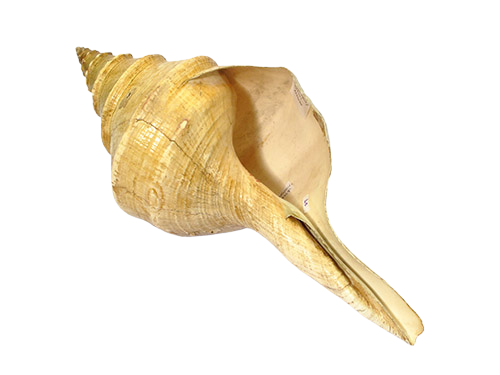

Maluku

Gambar diatas adalah Tahuri, Tahuri adalah terompet yang terbuat dari kerang. Cara dimainkannya tentu dengan ditiup. Tahuri terbuat dari kerang triton yang berkualitas sangat baik dan bisa dibuat untuk alat musik tiup. Tahuri berfungsi sebagai alat komunikasi rakyat Maluku.